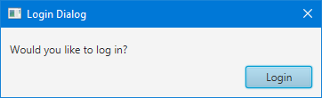

- Type Parameters:
R- The return type of the dialog, via theresultproperty.
- All Implemented Interfaces:
EventTarget
- Direct Known Subclasses:
Alert,ChoiceDialog,TextInputDialog
DialogPane and provides the necessary API
to present it to end users. In JavaFX 8u40, this essentially means that the
DialogPane is shown to users inside a Stage, but future releases
may offer alternative options (such as 'lightweight' or 'internal' dialogs).
This API therefore is intentionally ignorant of the underlying implementation,
and attempts to present a common API for all possible implementations.
The Dialog class has a single generic type, R, which is used to represent
the type of the result property (and also, how to
convert from ButtonType to R, through the use of the
result converter Callback).
Critical note: It is critical that all developers who choose
to create their own dialogs by extending the Dialog class understand the
importance of the result converter property.
A result converter must always be set, whenever the R type is not
Void or ButtonType. If this is not heeded, developers will find
that they get ClassCastExceptions in their code, for failure to convert from
ButtonType via the result converter.
It is likely that most developers would be better served using either the
Alert class (for pre-defined, notification-style alerts), or either of
the two pre-built dialogs (TextInputDialog and ChoiceDialog),
depending on their needs.
Once a Dialog is instantiated, the next step is to configure it. Almost
all properties on Dialog are not related to the content of the Dialog, the
only exceptions are contentTextProperty(),
headerTextProperty(), and graphicProperty(), and these
properties are simply forwarding API onto the respective properties on the
DialogPane stored in the dialog pane
property. These three properties are forwarded from DialogPane for developer
convenience. For developers wanting to configure their dialog, they will in many
cases be required to use code along the lines of
dialog.getDialogPane().setExpandableContent(node).
After configuring these properties, all that remains is to consider whether
the buttons (created using ButtonType and the
DialogPane.createButton(ButtonType) method) are fully configured.
Developers will quickly find that the amount of configurability offered
via the ButtonType class is minimal. This is intentional, but does not
mean that developers can not modify the buttons created by the ButtonType
that have been specified. To do this, developers simply call the
DialogPane.lookupButton(ButtonType) method with the ButtonType
(assuming it has already been set in the DialogPane.getButtonTypes()
list. The returned Node is typically of type Button, but this depends
on if the DialogPane.createButton(ButtonType) method has been overridden. A
typical approach is therefore along the following lines:
ButtonType loginButtonType = new ButtonType("Login", ButtonData.OK_DONE);
Dialog<String> dialog = new Dialog<>();
dialog.setTitle("Login Dialog");
dialog.setContentText("Would you like to log in?");
dialog.getDialogPane().getButtonTypes().add(loginButtonType);
boolean disabled = false; // computed based on content of text fields, for example
dialog.getDialogPane().lookupButton(loginButtonType).setDisable(disabled);
dialog.showAndWait();

Once a Dialog is instantiated and fully configured, the next step is to show it. More often than not, dialogs are shown in a modal and blocking fashion. 'Modal' means that the dialog prevents user interaction with the owning application whilst it is showing, and 'blocking' means that code execution stops at the point in which the dialog is shown. This means that you can show a dialog, await the user response, and then continue running the code that directly follows the show call, giving developers the ability to immediately deal with the user input from the dialog (if relevant).
JavaFX dialogs are modal by default (you can change this via the
initModality(javafx.stage.Modality) API). To specify whether you want
blocking or non-blocking dialogs, developers simply choose to call
showAndWait() or show() (respectively). By default most
developers should choose to use showAndWait(), given the ease of
coding in these situations. Shown below is three code snippets, showing three
equally valid ways of showing a dialog:
Option 1: The 'traditional' approach
Optional<ButtonType> result = dialog.showAndWait();
if (result.isPresent() && result.get() == ButtonType.OK) {
formatSystem();
}
Option 2: The traditional + Optional approach
dialog.showAndWait().ifPresent(response -> {
if (response == ButtonType.OK) {
formatSystem();
}
});
Option 3: The fully lambda approach
dialog.showAndWait()
.filter(response -> response == ButtonType.OK)
.ifPresent(response -> formatSystem());
There is no better or worse option of the three listed above, so developers
are encouraged to work to their own style preferences. The purpose of showing
the above is to help introduce developers to the Optional API, which
is new in Java 8 and may be foreign to many developers.
Dialog Validation / Intercepting Button Actions
In some circumstances it is desirable to prevent a dialog from closing
until some aspect of the dialog becomes internally consistent (e.g. a form
inside the dialog has all fields in a valid state). To do this, users of the
dialogs API should become familiar with the
DialogPane.lookupButton(ButtonType) method. By passing in a
ButtonType (that has already been set
in the button types list), users will be
returned a Node that is typically of type Button (but this depends
on if the DialogPane.createButton(ButtonType) method has been
overridden). With this button, users may add an event filter that is called
before the button does its usual event handling, and as such users may
prevent the event handling by consuming the event. Here's a simplified
example:
final Button btOk = (Button) dlg.getDialogPane().lookupButton(ButtonType.OK);
btOk.addEventFilter(ActionEvent.ACTION, event -> {
if (!validateAndStore()) {
event.consume();
}
});
Dialog Closing Rules
It is important to understand what happens when a Dialog is closed, and also how a Dialog can be closed, especially in abnormal closing situations (such as when the 'X' button is clicked in a dialogs title bar, or when operating system specific keyboard shortcuts (such as alt-F4 on Windows) are entered). Fortunately, the outcome is well-defined in these situations, and can be best summarised in the following bullet points:
- JavaFX dialogs can only be closed 'abnormally' (as defined above) in
two situations:
- When the dialog only has one button, or
- When the dialog has multiple buttons, as long as one of them meets
one of the following requirements:
- The button has a
ButtonTypewhoseButtonBar.ButtonDatais of typeButtonBar.ButtonData.CANCEL_CLOSE. - The button has a
ButtonTypewhoseButtonBar.ButtonDatareturns true whenButtonBar.ButtonData.isCancelButton()is called.
- The button has a
- In all other situations, the dialog will refuse to respond to all
close requests, remaining open until the user clicks on one of the available
buttons in the
DialogPanearea of the dialog. - If a dialog is closed abnormally, and if the dialog contains a button
which meets one of the two criteria above, the dialog will attempt to set
the
resultproperty to whatever value is returned from calling theresult converterwith the first matchingButtonType. - If for any reason the result converter returns null, or if the dialog
is closed when only one non-cancel button is present, the
resultproperty will be null, and theshowAndWait()method will returnOptional.empty(). This later point means that, if you use either of option 2 or option 3 (as presented earlier in this class documentation), theOptional.ifPresent(java.util.function.Consumer)lambda will never be called, and code will continue executing as if the dialog had not returned any value at all.
- Since:
- JavaFX 8u40
- See Also:
-
Property Summary
PropertiesTypePropertyDescriptionfinal StringPropertyA property representing the content text for the dialog pane.final ObjectProperty<DialogPane>The root node of the dialog, theDialogPanecontains all visual elements shown in the dialog.final ObjectProperty<Node>The dialog graphic, presented either in the header, if one is showing, or to the left of thecontent.final StringPropertyA property representing the header text for the dialog pane.final ReadOnlyDoublePropertyProperty representing the height of the dialog.final ObjectProperty<EventHandler<DialogEvent>>Called when there is an external request to close thisDialog.final ObjectProperty<EventHandler<DialogEvent>>Called just after the Dialog has been hidden.final ObjectProperty<EventHandler<DialogEvent>>Called just prior to the Dialog being hidden.final ObjectProperty<EventHandler<DialogEvent>>Called just prior to the Dialog being shown.final ObjectProperty<EventHandler<DialogEvent>>Called just after the Dialog is shown.final BooleanPropertyRepresents whether the dialog is resizable.final ObjectProperty<Callback<ButtonType,R>> API to convert theButtonTypethat the user clicked on into a result that can be returned via theresultproperty.final ObjectProperty<R>A property representing what has been returned from the dialog.final ReadOnlyBooleanPropertyRepresents whether the dialog is currently showing.final StringPropertyReturn the titleProperty of the dialog.final ReadOnlyDoublePropertyProperty representing the width of the dialog.final ReadOnlyDoublePropertyThe horizontal location of thisDialog.final ReadOnlyDoublePropertyThe vertical location of thisDialog. -
Constructor Summary
Constructors -
Method Summary
Modifier and TypeMethodDescriptionConstruct an event dispatch chain for this target.final voidclose()Closes thisDialog.final StringPropertyA property representing the content text for the dialog pane.final ObjectProperty<DialogPane>The root node of the dialog, theDialogPanecontains all visual elements shown in the dialog.final StringReturns the currently-set content text for this DialogPane.final DialogPaneGets the value of thedialogPaneproperty.final NodeGets the value of thegraphicproperty.final StringReturns the currently-set header text for this DialogPane.final doubleReturns the height of the dialog.final ModalityRetrieves the modality attribute for this dialog.final EventHandler<DialogEvent>Gets the value of theonCloseRequestproperty.final EventHandler<DialogEvent>Gets the value of theonHiddenproperty.final EventHandler<DialogEvent>Gets the value of theonHidingproperty.final EventHandler<DialogEvent>Gets the value of theonShowingproperty.final EventHandler<DialogEvent>Gets the value of theonShownproperty.final WindowgetOwner()Retrieves the owner Window for this dialog, or null for an unowned dialog.final RGets the value of theresultproperty.final Callback<ButtonType,R> Gets the value of theresultConverterproperty.final StringgetTitle()Return the title of the dialog.final doublegetWidth()Returns the width of the dialog.final doublegetX()Gets the value of thexproperty.final doublegetY()Gets the value of theyproperty.final ObjectProperty<Node>The dialog graphic, presented either in the header, if one is showing, or to the left of thecontent.final StringPropertyA property representing the header text for the dialog pane.final ReadOnlyDoublePropertyProperty representing the height of the dialog.final voidhide()Hides thisDialog.final voidinitModality(Modality modality) Specifies the modality for this dialog.final voidSpecifies the ownerWindowfor this dialog, or null for a top-level, unowned dialog.final voidinitStyle(StageStyle style) Specifies the style for this dialog.final booleanReturns whether or not the dialog is resizable.final booleanReturns whether or not the dialog is showing.final ObjectProperty<EventHandler<DialogEvent>>Called when there is an external request to close thisDialog.final ObjectProperty<EventHandler<DialogEvent>>Called just after the Dialog has been hidden.final ObjectProperty<EventHandler<DialogEvent>>Called just prior to the Dialog being hidden.final ObjectProperty<EventHandler<DialogEvent>>Called just prior to the Dialog being shown.final ObjectProperty<EventHandler<DialogEvent>>Called just after the Dialog is shown.final BooleanPropertyRepresents whether the dialog is resizable.final ObjectProperty<Callback<ButtonType,R>> API to convert theButtonTypethat the user clicked on into a result that can be returned via theresultproperty.final ObjectProperty<R>A property representing what has been returned from the dialog.final voidsetContentText(String contentText) Sets the string to show in the dialog content area.final voidsetDialogPane(DialogPane value) Sets the value of thedialogPaneproperty.final voidsetGraphic(Node graphic) Sets the dialog graphic, which will be displayed either in the header, if one is showing, or to the left of thecontent.final voidsetHeaderText(String headerText) Sets the string to show in the dialog header area.final voidsetHeight(double height) Sets the height of the dialog.final voidsetOnCloseRequest(EventHandler<DialogEvent> value) Sets the value of theonCloseRequestproperty.final voidsetOnHidden(EventHandler<DialogEvent> value) Sets the value of theonHiddenproperty.final voidsetOnHiding(EventHandler<DialogEvent> value) Sets the value of theonHidingproperty.final voidsetOnShowing(EventHandler<DialogEvent> value) Sets the value of theonShowingproperty.final voidsetOnShown(EventHandler<DialogEvent> value) Sets the value of theonShownproperty.final voidsetResizable(boolean resizable) Sets whether the dialog can be resized by the user.final voidSets the value of theresultproperty.final voidsetResultConverter(Callback<ButtonType, R> value) Sets the value of theresultConverterproperty.final voidChange the Title of the dialog.final voidsetWidth(double width) Sets the width of the dialog.final voidsetX(double x) Sets the value of thexproperty.final voidsetY(double y) Sets the value of theyproperty.final voidshow()Shows the dialog but does not wait for a user response (in other words, this brings up a non-blocking dialog).Shows the dialog and waits for the user response (in other words, brings up a blocking dialog, with the returned value the users input).final ReadOnlyBooleanPropertyRepresents whether the dialog is currently showing.final StringPropertyReturn the titleProperty of the dialog.final ReadOnlyDoublePropertyProperty representing the width of the dialog.final ReadOnlyDoublePropertyThe horizontal location of thisDialog.final ReadOnlyDoublePropertyThe vertical location of thisDialog.
-
Property Details
-
dialogPane
The root node of the dialog, theDialogPanecontains all visual elements shown in the dialog. As such, it is possible to completely adjust the display of the dialog by modifying the existing dialog pane or creating a new one. -
contentText
A property representing the content text for the dialog pane. The content text is lower precedence than thecontent node, meaning that if both the content node and the contentText properties are set, the content text will not be displayed in a default DialogPane instance. -
headerText
A property representing the header text for the dialog pane. The header text is lower precedence than theheader node, meaning that if both the header node and the headerText properties are set, the header text will not be displayed in a default DialogPane instance. -
graphic
The dialog graphic, presented either in the header, if one is showing, or to the left of thecontent.- See Also:
-
result
A property representing what has been returned from the dialog. A result is generated through theresult converter, which is intended to convert from theButtonTypethat the user clicked on into a value of type R. Refer to theDialogclass JavaDoc for more details.- See Also:
-
resultConverter
API to convert theButtonTypethat the user clicked on into a result that can be returned via theresultproperty. This is necessary asButtonTyperepresents the visual button within the dialog, and do not know how to map themselves to a valid result - that is a requirement of the dialog implementation by making use of the result converter. In some cases, the result type of a Dialog subclass is ButtonType (which means that the result converter can be null), but in some cases (where the result type, R, is not ButtonType or Void), this callback must be specified. -
showing
Represents whether the dialog is currently showing.- See Also:
-
resizable
Represents whether the dialog is resizable. -
width
Property representing the width of the dialog.- See Also:
-
height
Property representing the height of the dialog.- See Also:
-
title
Return the titleProperty of the dialog.- See Also:
-
x
The horizontal location of thisDialog. Changing this attribute will move theDialoghorizontally.- See Also:
-
y
The vertical location of thisDialog. Changing this attribute will move theDialogvertically.- See Also:
-
onShowing
Called just prior to the Dialog being shown. -
onShown
Called just after the Dialog is shown. -
onHiding
Called just prior to the Dialog being hidden. -
onHidden
Called just after the Dialog has been hidden. When theDialogis hidden, this event handler is invoked allowing the developer to clean up resources or perform other tasks when theAlertis closed. -
onCloseRequest
Called when there is an external request to close thisDialog. The installed event handler can prevent dialog closing by consuming the received event.
-
-
Constructor Details
-
Dialog
public Dialog()Creates a dialog without a specified owner.
-
-
Method Details
-
show
public final void show()Shows the dialog but does not wait for a user response (in other words, this brings up a non-blocking dialog). Users of this API must either poll theresult property, or else add a listener to the result property to be informed of when it is set.- Throws:
IllegalStateException- if this method is called on a thread other than the JavaFX Application Thread.
-
showAndWait
Shows the dialog and waits for the user response (in other words, brings up a blocking dialog, with the returned value the users input).This method must be called on the JavaFX Application thread. Additionally, it must either be called from an input event handler or from the run method of a Runnable passed to
Platform.runLater. It must not be called during animation or layout processing.- Returns:
- An
Optionalthat contains theresult. Refer to theDialogclass documentation for more detail. - Throws:
IllegalStateException- if this method is called on a thread other than the JavaFX Application Thread.IllegalStateException- if this method is called during animation or layout processing.
-
close
public final void close()Closes thisDialog. This call is equivalent tohide(). -
hide
public final void hide()Hides thisDialog. -
initModality
Specifies the modality for this dialog. This must be done prior to making the dialog visible. The modality is one of: Modality.NONE, Modality.WINDOW_MODAL, or Modality.APPLICATION_MODAL.- Default value:
- Modality.APPLICATION_MODAL
- Parameters:
modality- the modality for this dialog.- Throws:
IllegalStateException- if this property is set after the dialog has ever been made visible.
-
getModality
Retrieves the modality attribute for this dialog.- Returns:
- the modality.
-
initStyle
Specifies the style for this dialog. This must be done prior to making the dialog visible. The style is one of: StageStyle.DECORATED, StageStyle.UNDECORATED, StageStyle.TRANSPARENT, StageStyle.UTILITY, or StageStyle.UNIFIED.- Default value:
- StageStyle.DECORATED
- Parameters:
style- the style for this dialog.- Throws:
IllegalStateException- if this property is set after the dialog has ever been made visible.
-
initOwner
Specifies the ownerWindowfor this dialog, or null for a top-level, unowned dialog. This must be done prior to making the dialog visible.- Default value:
- null
- Parameters:
window- the ownerWindowfor this dialog.- Throws:
IllegalStateException- if this property is set after the dialog has ever been made visible.
-
getOwner
Retrieves the owner Window for this dialog, or null for an unowned dialog.- Returns:
- the owner Window.
-
dialogPaneProperty
The root node of the dialog, theDialogPanecontains all visual elements shown in the dialog. As such, it is possible to completely adjust the display of the dialog by modifying the existing dialog pane or creating a new one.- Returns:
- the
dialogPaneproperty - See Also:
-
getDialogPane
Gets the value of thedialogPaneproperty.- Property description:
- The root node of the dialog, the
DialogPanecontains all visual elements shown in the dialog. As such, it is possible to completely adjust the display of the dialog by modifying the existing dialog pane or creating a new one. - Returns:
- the value of the
dialogPaneproperty - See Also:
-
setDialogPane
Sets the value of thedialogPaneproperty.- Property description:
- The root node of the dialog, the
DialogPanecontains all visual elements shown in the dialog. As such, it is possible to completely adjust the display of the dialog by modifying the existing dialog pane or creating a new one. - Parameters:
value- the value for thedialogPaneproperty- See Also:
-
contentTextProperty
A property representing the content text for the dialog pane. The content text is lower precedence than thecontent node, meaning that if both the content node and the contentText properties are set, the content text will not be displayed in a default DialogPane instance.- Returns:
- the property representing the content text for the dialog pane
- See Also:
-
getContentText
Returns the currently-set content text for this DialogPane.- Returns:
- the currently-set content text for this DialogPane
-
setContentText
Sets the string to show in the dialog content area. Note that the content text is lower precedence than thecontent node, meaning that if both the content node and the contentText properties are set, the content text will not be displayed in a default DialogPane instance.- Parameters:
contentText- the string to show in the dialog content area
-
headerTextProperty
A property representing the header text for the dialog pane. The header text is lower precedence than theheader node, meaning that if both the header node and the headerText properties are set, the header text will not be displayed in a default DialogPane instance.- Returns:
- a property representing the header text for the dialog pane
- See Also:
-
getHeaderText
Returns the currently-set header text for this DialogPane.- Returns:
- the currently-set header text for this DialogPane
-
setHeaderText
Sets the string to show in the dialog header area. Note that the header text is lower precedence than theheader node, meaning that if both the header node and the headerText properties are set, the header text will not be displayed in a default DialogPane instance.- Parameters:
headerText- the string to show in the dialog header area
-
graphicProperty
The dialog graphic, presented either in the header, if one is showing, or to the left of thecontent.- Returns:
- An ObjectProperty wrapping the current graphic.
- See Also:
-
getGraphic
Gets the value of thegraphicproperty.- Property description:
- The dialog graphic, presented either in the header, if one is showing, or
to the left of the
content. - Returns:
- the value of the
graphicproperty - See Also:
-
setGraphic
Sets the dialog graphic, which will be displayed either in the header, if one is showing, or to the left of thecontent.- Parameters:
graphic- The new dialog graphic, or null if no graphic should be shown.
-
resultProperty
A property representing what has been returned from the dialog. A result is generated through theresult converter, which is intended to convert from theButtonTypethat the user clicked on into a value of type R. Refer to theDialogclass JavaDoc for more details.- Returns:
- a property representing what has been returned from the dialog
- See Also:
-
getResult
Gets the value of theresultproperty.- Property description:
- A property representing what has been returned from the dialog. A result
is generated through the
result converter, which is intended to convert from theButtonTypethat the user clicked on into a value of type R. Refer to theDialogclass JavaDoc for more details. - Returns:
- the value of the
resultproperty - See Also:
-
setResult
Sets the value of theresultproperty.- Property description:
- A property representing what has been returned from the dialog. A result
is generated through the
result converter, which is intended to convert from theButtonTypethat the user clicked on into a value of type R. Refer to theDialogclass JavaDoc for more details. - Parameters:
value- the value for theresultproperty- See Also:
-
resultConverterProperty
API to convert theButtonTypethat the user clicked on into a result that can be returned via theresultproperty. This is necessary asButtonTyperepresents the visual button within the dialog, and do not know how to map themselves to a valid result - that is a requirement of the dialog implementation by making use of the result converter. In some cases, the result type of a Dialog subclass is ButtonType (which means that the result converter can be null), but in some cases (where the result type, R, is not ButtonType or Void), this callback must be specified.- Returns:
- the API to convert the
ButtonTypethat the user clicked on - See Also:
-
getResultConverter
Gets the value of theresultConverterproperty.- Property description:
- API to convert the
ButtonTypethat the user clicked on into a result that can be returned via theresultproperty. This is necessary asButtonTyperepresents the visual button within the dialog, and do not know how to map themselves to a valid result - that is a requirement of the dialog implementation by making use of the result converter. In some cases, the result type of a Dialog subclass is ButtonType (which means that the result converter can be null), but in some cases (where the result type, R, is not ButtonType or Void), this callback must be specified. - Returns:
- the value of the
resultConverterproperty - See Also:
-
setResultConverter
Sets the value of theresultConverterproperty.- Property description:
- API to convert the
ButtonTypethat the user clicked on into a result that can be returned via theresultproperty. This is necessary asButtonTyperepresents the visual button within the dialog, and do not know how to map themselves to a valid result - that is a requirement of the dialog implementation by making use of the result converter. In some cases, the result type of a Dialog subclass is ButtonType (which means that the result converter can be null), but in some cases (where the result type, R, is not ButtonType or Void), this callback must be specified. - Parameters:
value- the value for theresultConverterproperty- See Also:
-
showingProperty
Represents whether the dialog is currently showing.- Returns:
- the property representing whether the dialog is currently showing
- See Also:
-
isShowing
public final boolean isShowing()Returns whether or not the dialog is showing.- Returns:
- true if dialog is showing.
-
resizableProperty
Represents whether the dialog is resizable.- Returns:
- the property representing whether the dialog is resizable
- See Also:
-
isResizable
public final boolean isResizable()Returns whether or not the dialog is resizable.- Returns:
- true if dialog is resizable.
-
setResizable
public final void setResizable(boolean resizable) Sets whether the dialog can be resized by the user. Resizable dialogs can also be maximized ( maximize button becomes visible)- Parameters:
resizable- true if dialog should be resizable.
-
widthProperty
Property representing the width of the dialog.- Returns:
- the property representing the width of the dialog
- See Also:
-
getWidth
public final double getWidth()Returns the width of the dialog.- Returns:
- the width of the dialog
-
setWidth
public final void setWidth(double width) Sets the width of the dialog.- Parameters:
width- the width of the dialog
-
heightProperty
Property representing the height of the dialog.- Returns:
- the property representing the height of the dialog
- See Also:
-
getHeight
public final double getHeight()Returns the height of the dialog.- Returns:
- the height of the dialog
-
setHeight
public final void setHeight(double height) Sets the height of the dialog.- Parameters:
height- the height of the dialog
-
titleProperty
Return the titleProperty of the dialog.- Returns:
- the titleProperty of the dialog
- See Also:
-
getTitle
Return the title of the dialog.- Returns:
- the title of the dialog
-
setTitle
Change the Title of the dialog.- Parameters:
title- the Title of the dialog
-
getX
public final double getX()Gets the value of thexproperty.- Property description:
- The horizontal location of this
Dialog. Changing this attribute will move theDialoghorizontally. - Returns:
- the value of the
xproperty - See Also:
-
setX
public final void setX(double x) Sets the value of thexproperty.- Property description:
- The horizontal location of this
Dialog. Changing this attribute will move theDialoghorizontally. - Parameters:
x- the value for thexproperty- See Also:
-
xProperty
The horizontal location of thisDialog. Changing this attribute will move theDialoghorizontally.- Returns:
- the horizontal location of this
Dialog - See Also:
-
getY
public final double getY()Gets the value of theyproperty.- Property description:
- The vertical location of this
Dialog. Changing this attribute will move theDialogvertically. - Returns:
- the value of the
yproperty - See Also:
-
setY
public final void setY(double y) Sets the value of theyproperty.- Property description:
- The vertical location of this
Dialog. Changing this attribute will move theDialogvertically. - Parameters:
y- the value for theyproperty- See Also:
-
yProperty
The vertical location of thisDialog. Changing this attribute will move theDialogvertically.- Returns:
- the vertical location of this
Dialog - See Also:
-
buildEventDispatchChain
Construct an event dispatch chain for this target. The event dispatch chain contains event dispatchers which might be interested in processing of events targeted at thisEventTarget. This event target is not automatically added to the chain, so if it wants to process events, it needs to add anEventDispatcherfor itself to the chain.In the case the event target is part of some hierarchy, the chain for it is usually built from event dispatchers collected from the root of the hierarchy to the event target.
The event dispatch chain is constructed by modifications to the provided initial event dispatch chain. The returned chain should have the initial chain at its end so the dispatchers should be prepended to the initial chain.
The caller shouldn't assume that the initial chain remains unchanged nor that the returned value will reference a different chain.
- Specified by:
buildEventDispatchChainin interfaceEventTarget- Parameters:
tail- the initial chain to build from- Returns:
- the resulting event dispatch chain for this target
-
setOnShowing
Sets the value of theonShowingproperty.- Property description:
- Called just prior to the Dialog being shown.
- Parameters:
value- the value for theonShowingproperty- See Also:
-
getOnShowing
Gets the value of theonShowingproperty.- Property description:
- Called just prior to the Dialog being shown.
- Returns:
- the value of the
onShowingproperty - See Also:
-
onShowingProperty
Called just prior to the Dialog being shown.- Returns:
- the
onShowingproperty - See Also:
-
setOnShown
Sets the value of theonShownproperty.- Property description:
- Called just after the Dialog is shown.
- Parameters:
value- the value for theonShownproperty- See Also:
-
getOnShown
Gets the value of theonShownproperty.- Property description:
- Called just after the Dialog is shown.
- Returns:
- the value of the
onShownproperty - See Also:
-
onShownProperty
Called just after the Dialog is shown.- Returns:
- the
onShownproperty - See Also:
-
setOnHiding
Sets the value of theonHidingproperty.- Property description:
- Called just prior to the Dialog being hidden.
- Parameters:
value- the value for theonHidingproperty- See Also:
-
getOnHiding
Gets the value of theonHidingproperty.- Property description:
- Called just prior to the Dialog being hidden.
- Returns:
- the value of the
onHidingproperty - See Also:
-
onHidingProperty
Called just prior to the Dialog being hidden.- Returns:
- the
onHidingproperty - See Also:
-
setOnHidden
Sets the value of theonHiddenproperty.- Property description:
- Called just after the Dialog has been hidden.
When the
Dialogis hidden, this event handler is invoked allowing the developer to clean up resources or perform other tasks when theAlertis closed. - Parameters:
value- the value for theonHiddenproperty- See Also:
-
getOnHidden
Gets the value of theonHiddenproperty.- Property description:
- Called just after the Dialog has been hidden.
When the
Dialogis hidden, this event handler is invoked allowing the developer to clean up resources or perform other tasks when theAlertis closed. - Returns:
- the value of the
onHiddenproperty - See Also:
-
onHiddenProperty
Called just after the Dialog has been hidden. When theDialogis hidden, this event handler is invoked allowing the developer to clean up resources or perform other tasks when theAlertis closed.- Returns:
- the
onHiddenproperty - See Also:
-
setOnCloseRequest
Sets the value of theonCloseRequestproperty.- Property description:
- Called when there is an external request to close this
Dialog. The installed event handler can prevent dialog closing by consuming the received event. - Parameters:
value- the value for theonCloseRequestproperty- See Also:
-
getOnCloseRequest
Gets the value of theonCloseRequestproperty.- Property description:
- Called when there is an external request to close this
Dialog. The installed event handler can prevent dialog closing by consuming the received event. - Returns:
- the value of the
onCloseRequestproperty - See Also:
-
onCloseRequestProperty
Called when there is an external request to close thisDialog. The installed event handler can prevent dialog closing by consuming the received event.- Returns:
- the
onCloseRequestproperty - See Also:
-